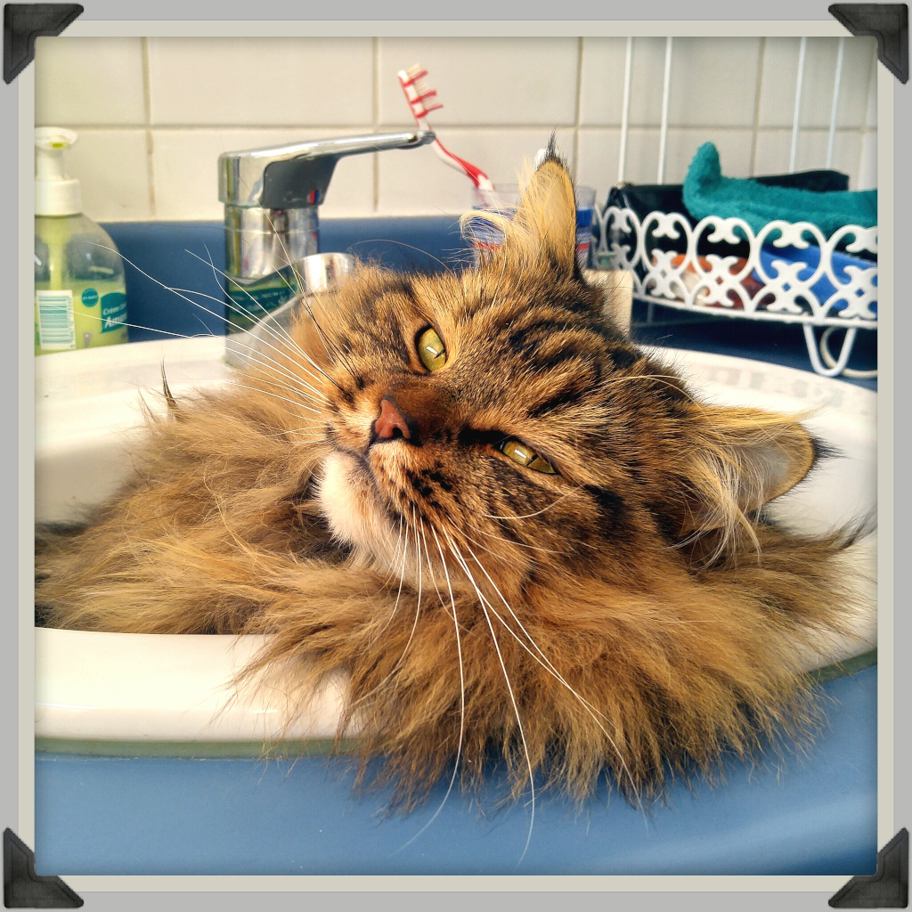

J'ai mangé mickey
Le week-end dernier, j’ai enfin pu réaliser mon rêve en me rendant à Disneyland, le terrain de chasse idéal !
En plus, il faisait super beau et les souris étaient de sortie. Mon instinct m’a conduit tout droit vers leur
repaire où j’ai pu [acheter] capturer ma première proie.

A la chasse !
Ensuite, j’ai foncé vers Space Mountain pour essayer d’être le premier chat dans l’espace !
Malheureusement, je n’ai pas encore ma taille adulte de 1,30m et donc je n’ai pas été autorisé à bord…
En plus j’avais l’impression que Pluto me narguait, il arrêtait pas d’agiter les bras comme un dingo !
Bref, j’étais en boule, alors je me suis mis à la recherche d’une sucrerie pour me calmer et j’ai essayé
de voler un pot de miel qui “traînait”. Mais Winnie m’a vu et j’ai dû encore sortir les griffes, c’était lui ou moi.

Le repos du guerrier
Pour me détendre un peu, j’ai voulu faire un tour du côté des poupées
(on m’a dit qu’ils utilisaient des pelotes géantes pour les fabriquer !)
mais je me suis dit qu’il valait mieux prendre le temps de digérer.
Alors je me suis trouvé un endroit sympa et au calme pour faire une petite sieste de quelques heures.
Malheureusement, quand je me suis réveillé, le parc était fermé et j’avais raté mon train.
Bref, c’était une super journée !